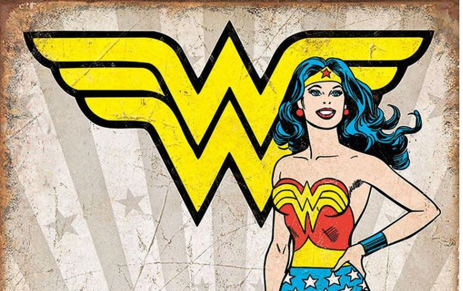
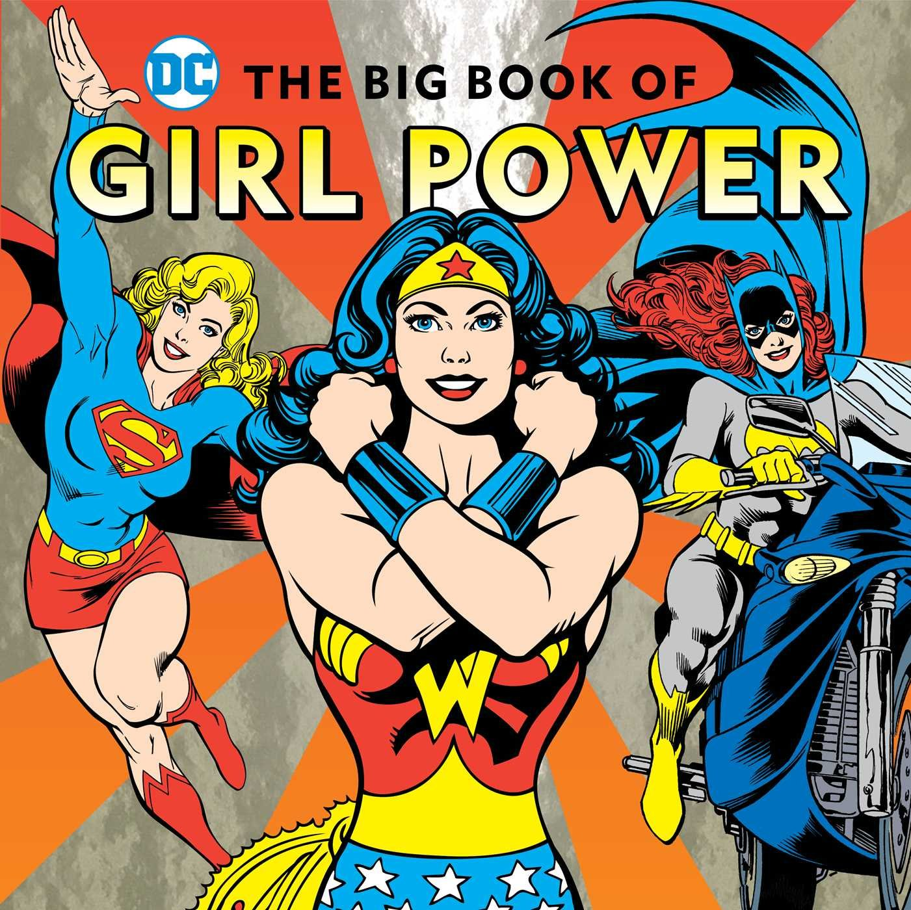
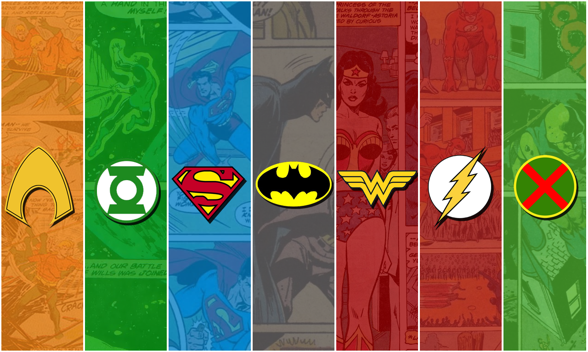
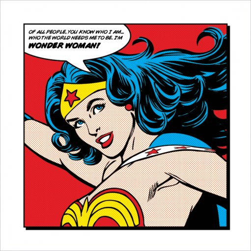

About Wonder Woman
One of the most beloved and iconic DC Super Heroes of all time, Wonder Woman has stood for nearly eighty years as a symbol of truth, justice and equality to people everywhere. Raised on the hidden island of Themyscira, also known as Paradise Island, Diana is an Amazon, like the figures of Greek legend, and her people's gift to humanity.
Her famous winged W represents her golden age incarination
"Beautiful as Aphrodite, wise as Athena, swifter than Hermes, and stronger than Hercules, Princess Diana of Themyscira fights for peace in Man's World." ~DC entertainment
Impact On Young Girls
Wonder woman he was created to be a positive role-model and a strong female character for girls and boys, as she was one of the first female superheros to gain the love and popularity of thr crowd. She always emphasized qualities like power, sacrifice, and love of where you come from. Since her story started as a little girl doubting herself, many girls out there could appeal to such emotions and relate until we got to see her she slowly believe in herself by the support of her loving mother and the tough-love of her aunt who gifted Diana many of the skills she fosters. Later, the crowd of women heros rose and Wonder Woman got accompanied by her current super friends Batgirl and Supergirl all to claim the message of how strong girlpower can be.
The three bestfriends Supergirl, Wonder Woman , and Batgirl showing us the wonders of girl power in their book
Her Wonder Powers
Diana is depicted as a masterful athlete, acrobat, fighter and strategist, trained and experienced in many ancient and modern forms of armed and unarmed combat, including exclusive Amazonian martial arts. With her godlike abilities of incalculable superhuman strength, nigh-invulnerability, speed, flight, healing factor and semi-immortality, Diana’s fighting prowess is enhanced. In some versions, her mother trained her, as Wonder Girl, for a future career as Wonder Woman. From the beginning, she is portrayed as highly skilled in using her Amazon bracelets to stop bullets and in wielding her golden lasso. Batman once called her the "best melee fighter in the world". The modern version of the character is known to use lethal force when she deems it necessary.In the New 52 continuity, her superior combat skills are the result of her Amazon training, as well as receiving further training from Ares, the God of War, himself, since as early as her childhood. The Golden Age Wonder Woman also had knowledge in psychology, as did her Amazon sisters. Here's a list of the top 8:
- super strength
- invulnerability
- combat skill
- combat strategy
- superhuman agility
- healing factor
- magic weaponry
- the golden truth lasso
"It’s not about what they deserve. It’s about what you believe. ~Steve Trevor"
Wonder Woman's Friends
Apart from being a superhero independantly, Wonder Woman is the only woman known to be part of the Justice League which is an A-team of crusaders with a superpowered bench deep enough to handle any cosmic foe, these heroes are all still very human at heart, plagued with the flaws that haunt any of us. Click on the links below to read more about them each of them.
"I am Diana Prince of Themyscira, daughter of Hippolyta, Queen of the Amazons... in the name of all that it is good...your wrath upon this world... is OVER!" ~Wonder Woman
